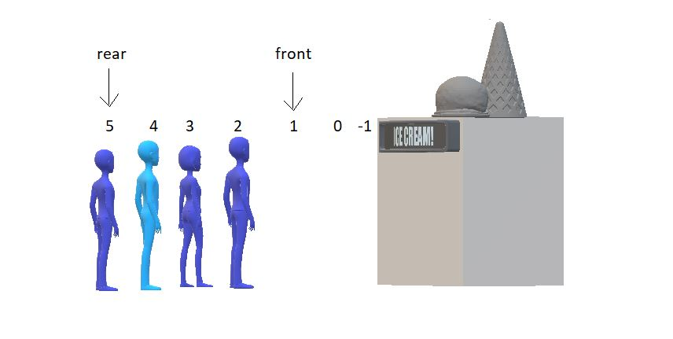
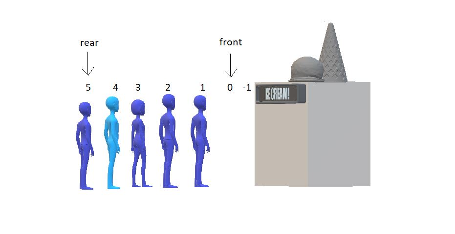
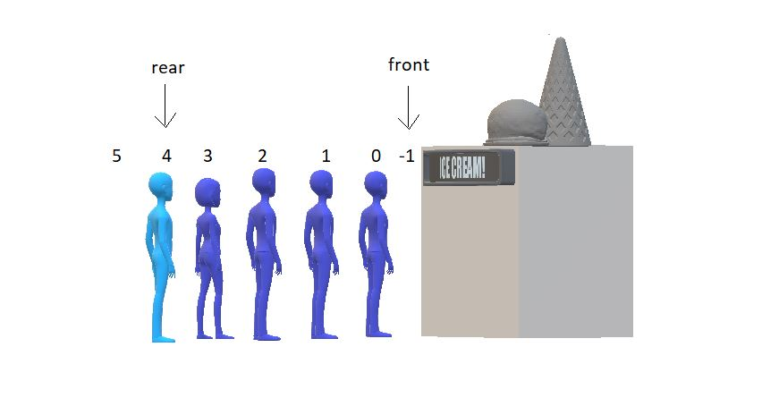

Now since the front has no space to insert, you can only insert at the rear end. But if the front manages to have some space after some dequeuing, then our condition would be something like this:

Two places to fill in front. So, in DEQueue we fill our new element at the front and decrease the value of front f by one.

we first delete the element at rear and decrease the value of the rear by 1.

DEQueues are of two types:
Restricted Input DEQueue
Restricted Output DEQueue
Input restricted DEQueues don’t allow insertion on the front end. But you can delete from both ends.
Output restricted DEQueues don’t allow deletion from the rear end. But you can perform the insertion on both the ends.
data part → same as queue
Methods